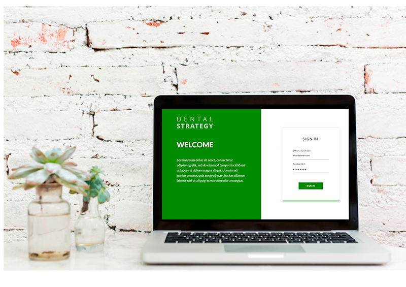

Dental Strategy Intro
ABOUT
Abstract
Dental Strategy is a business management consulting firm specializing in dental practices, from startup, to Human Resources, patient retention and other areas related to overall practice management. They approached the Reactr team to collaborate in creating a learning management system (LMS) that will further assist dental practices in providing sound professional and consistent administrative and human resource training for their employees. By converting the existing “wiki” format of educational materials to a modular online learning tool, Dental Strategy seeks to change the way their clients train and educate their employees. Through an approachable lesson structure and a consistent user experience, practice employees will be able to gain the required knowledge for their role. Gamification concepts will be employed to provide consistent and useful performance feedback to users.
Proposed Solution
Offering a modular online tool which has been surging in popularity in dedicated learning spaces for making education clear and engaging, and allowing for content to be easier to update and expand. Such LMS software has not yet been consistently leveraged in the dental industry. Dental Strategy seeks to migrate their previous “wiki” to a modern learning management system, so that dental practices can more quickly and efficiently onboard and train new employees in every role.
Outcome
The ability to easily customize the material to use different media as needed will allow the application to be appealing to the majority of practices, therefore hopefully maximizing the marketability of the application. Furthermore, the user management system and progression tracking will appeal to practice administrators, as a means to save time (and money) spent on content sourcing and creation, progress tracking and other resource-intensive activities. Most importantly, employees will be better able to easily access training in a linear or non-linear way, be able to track their progress at various levels, and ultimately be more engaged and satisfied with the workplace training experience.
Dental Strategy Methods
METHOD
Digital Instruction Manuals
Interface with focused and approachable user experience, to minimize confusion in module navigation or overall performance.
Learning Platform
Extensive user management system allowing administrators and users to monitor progress through learning lessons, modules and tracks. Possibility to add rich media (such as photos and videos) to support concepts being taught. Ability to create quizzes for each lesson, module or tracks.
Content Management
The use of modern open-source technologies guarantees the application to be accessible for modification and for easier maintenance of content and performance tracking. An overall ‘knowledge structure’ allows employees to preview different career tracks and their overall progress.
Dental Strategy Tools
TOOLS
By working from the structure of the information in the existing Dental Strategy resources, a responsive application interface with the use of HTML, CSS and SASS was designed. The layout was thought strictly from the needs of the user on a given page, allowing the users to always have the necessary resources, while not cluttering with excessive information. With a thorough and extensible back end architecture using MySQL and Laravel, a strong API was created, allowing the data to be extended for future applications or tools the client may wish to develop. Furthermore, the API reduces difficulties communicating through various portions of the application during development.